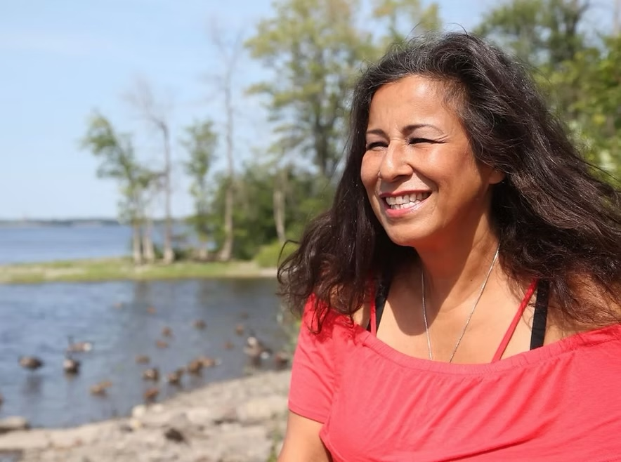

25 Years of Friendship
"You’ll find that as soon as you put somebody in a canoe, it takes away all of the trappings, all of your extra; your cellphone, they’re actually talking or maybe not - but there’s definitely some communicating going on." — Lynda Kitchikeesic (1965–2023)
Flotilla for Friendship 2026: Celebrating 25 Years
The Flotilla for Friendship 2026 marks a powerful milestone, celebrating 25 years of friendship, connection, and reconciliation between Indigenous communities and public service institutions in Ottawa.
Taking place on Wednesday, August 19, 2026, along the Rideau River, this annual gathering brings together Indigenous youth, community organizations, and police and first responder services for a full day of shared experiences rooted in culture, respect, and relationship-building.
Originally founded 25 years ago by the late Lynda Kitchikeesic, the Flotilla was created with a clear and meaningful vision: to foster healing and strengthen relationships between Indigenous communities and institutions through time spent on the land and water. Today, that vision continues to guide the event, making it a unique and impactful space for dialogue, trust-building, and mutual understanding.

"You’ll find that as soon as you put somebody in a canoe, it takes away all of the trappings, all of your extra; your cellphone, they’re actually talking or maybe not - but there’s definitely some communicating going on."
Throughout the day, participants will take part in:
- Canoeing along the Ottawa River: Symbolizing journey, unity, and shared direction.
- Cultural Activities: Honouring Indigenous traditions, ceremony, and knowledge.
- Interactive Games: Building trust and camaraderie in a relaxed setting.
- A Shared Community Meal: Creating space for informal connection, laughter, and storytelling.
- Youth & Responder Engagement: Direct dialogue between youth, police officers, emergency responders, and community leaders in a safe, welcoming environment.
The Flotilla is more than an event. It is a living commitment to reconciliation in action. By centering Indigenous youth voices and creating opportunities for meaningful interaction, the day helps break down historical barriers, build lasting trust, and inspire future leaders.
This 25th anniversary edition is especially significant. It represents a quarter century of sustained effort, relationships, and community impact. It is both a celebration of how far the journey has come and a renewed commitment to the path ahead.
Experience Flotilla for Friendship
Watch highlights from our annual canoeing journey and hear directly from youth, Elders, and officers on the impact of paddling together.